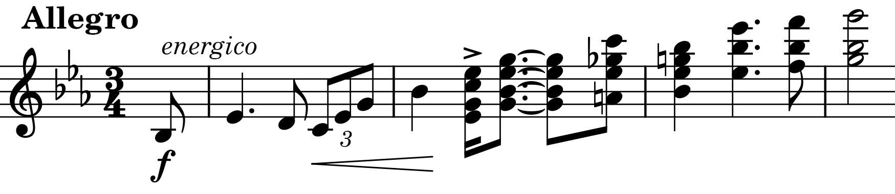
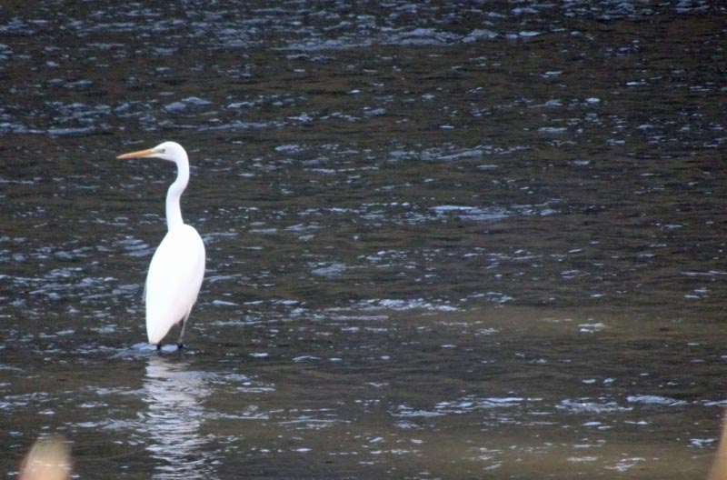

R. シュトラウス: ヴァイオリンソナタ
若い頃は苦手だったのに今ではその真逆という曲が結構ある。リヒャルト・シュトラウスのヴァイオリンソナタもその一つ。例えば下のような（第3楽章主題）短い音符にアクセントの付いた短＋長の符点リズム（しかも短い16分音符が拍に乗っている）がゴツゴツして馴染めなかったりした。今考えると不思議なのだが。

録音で聴く演奏に納得できるものがあまりなかったという理由もあるかもしれない。下のアルバムは配信で初めて聴いたものだが、上品で潜在的な力を感じさせる演奏だ。変な癖もなく、良い意味で模範的演奏という感じのもので非常に気に入った。繰り返し聴いて飽きないというべきか。模範的といっても地味な演奏ではもちろんなく、例えば第3楽章最初の主題提示部の終わりでピアノのCの低音オクターブが素晴らしい迫力で響いていたりと、魅力的で楽しい仕掛けもある。実演で思いがけず変な箇所に力みが入ってしまったというようなものとは違う、ちゃんと設計された効果である。アルバム全体も、リスト・ワーグナーという新ドイツ楽派のロマンティシズムをテーマに据えていて、この曲のあるべき場所を思い出させてくれる。ただ一つ、録音のせいかピアノの高音部和音が詰まって聴こえるのは残念。
Richard Strauss: Violin Sonata Op. 18
Lisa Schatzman (vn)
Benjamin Engeli (pf)
(2013)
下は以前フォーレの演奏でも聴いたルイ・ロルティとデュメイが組んで演奏したもの。ジャケットのデュメイはさすがに高齢になったと思わせるけれども、演奏はまだまだ現役の貫禄を示している。
Richard Strauss: Violin Sonata Op. 18
Augustin Dumay (vn)
Louis Lortie (pf)
(2012)
特に第3楽章のハ長調で始められる副主題は言うまでもなくこの曲の聴きどころのひとつで、額に入れて飾っておきたくなるような美しい箇所であるが、デュメイはここで実に柔らかい弱音から、曇りのない澄んだ音まで音色の幅を大きく使って、溜息の出るような素晴らしさを見せる。ちなみに、この旋律は一回だけピアノ主体で繰り返されて終わりで、まったく再現されない。もったいないとは思うのだが、かといってラフマニノフのように最後に副主題を高らかに歌いあげられてもシュトラウスのスタイルには全然そぐわないし、また聴きたくなるからこれでよいのだろう。
ピアノのロルティは、冒頭に書いたリズムのアクセントを無視して符点8分音符の方を拍に乗せるわかりやすいリズムに変えている。ゴツゴツよりも洗練を取ったのだろうか、しかしそれにより引っ掛かりというか曲の個性が弱められてしまったように思う。もうひとつ、最後のコーダに来て非常にさらっと軽くいなす終わり方も少しだけ気になった（これはライブで聴いた場合ならまったく気にならないだろうが）。

(Mar. 2, 2024)